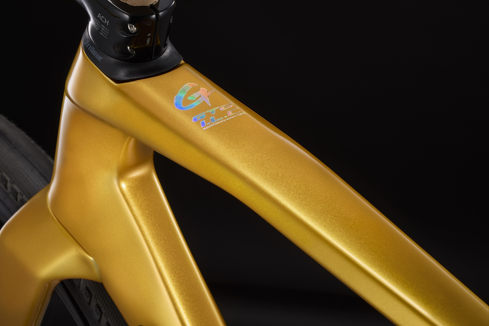
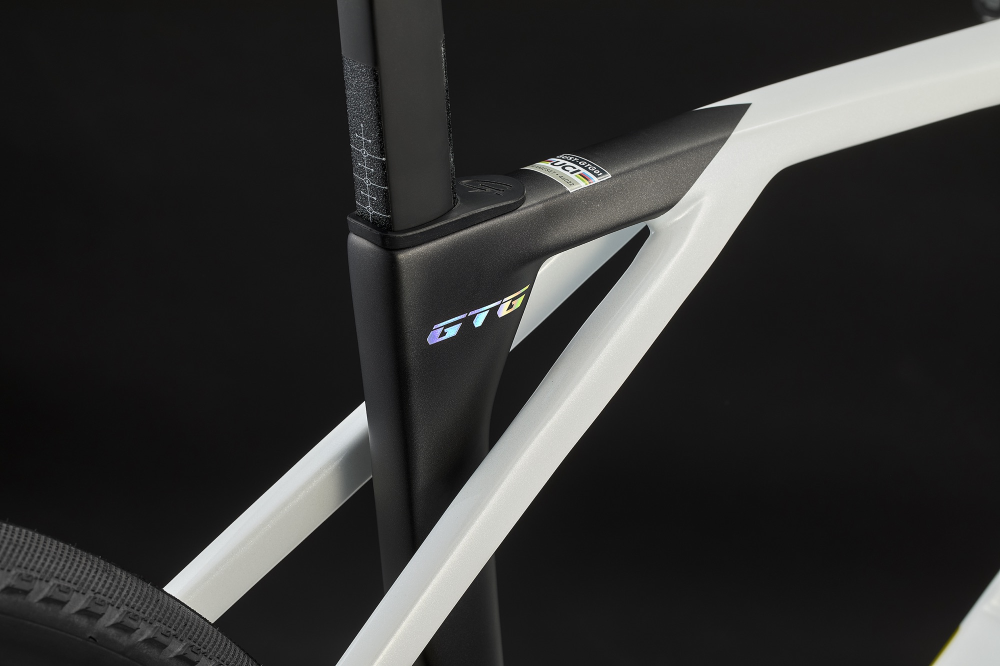

Gusto
GravelLe gravel carbone au service du cycliste ! Confortable, maniable, performant : là aussi, la marque Gusto propose un produit au rapport qualité / prix incroyable.
À partir de2 590 €
Demander des informations